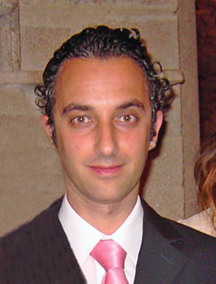

Manuel Castaño Sequero
Manuel Castaño Sequero  Manuel Castaño Sequero
Manuel Castaño Sequero 
 Haz clic aquí para detalles de la Familia de Manuel con Cristina Martín Jiménez
Haz clic aquí para detalles de la Familia de Manuel con Cristina Martín Jiménez
This page is within a frameset. View the entire genealogy report of Castaño Sequero families, or surname index of Castaño Sequero pedigrees or report summary of Castaño Sequero heritage from "Árbol Genealógico de Manolo y Amalia".
Genogram Examples.
© 2006 GenoPro Inc. All Rights Reserved.